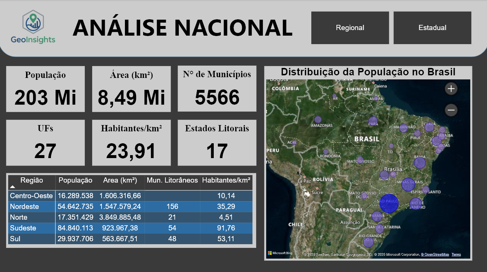
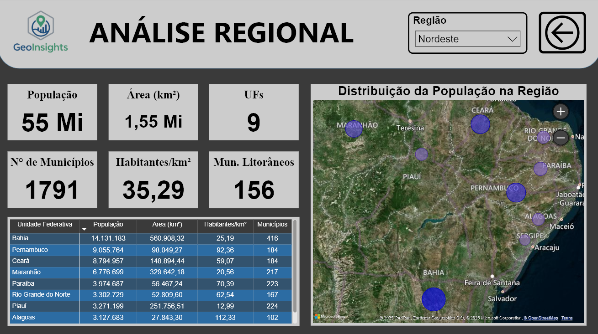
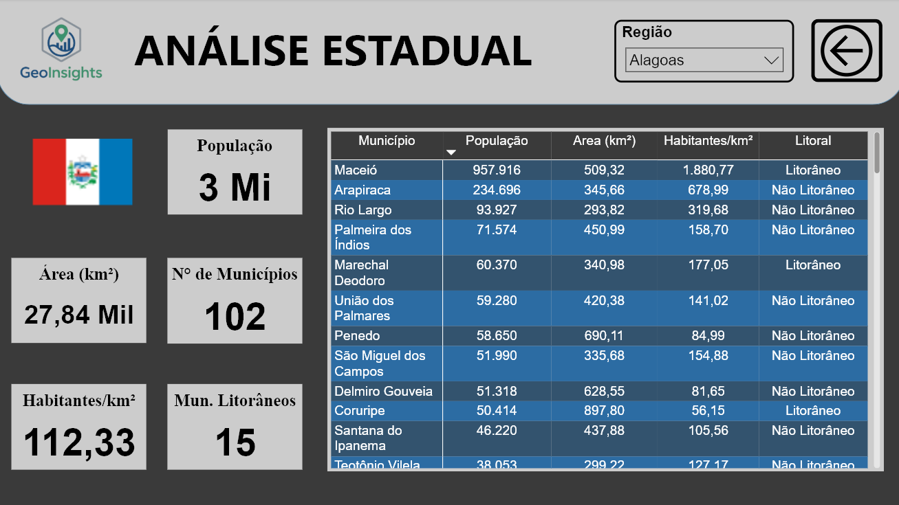
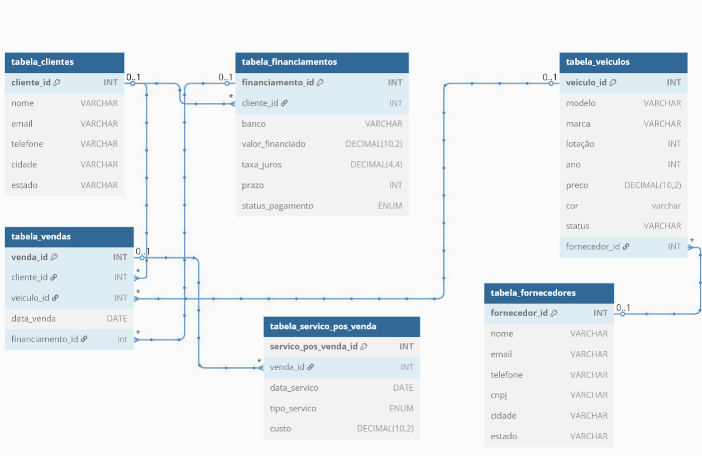

📦 Dashboard Excel E-commerce
Dashboard completo com extração, tratamento e visualização de dados de vendas utilizando Excel de dados de E-commerce fictícios.

Sou um entusiasta de análise de dados, com sólida base técnica em Excel, Power BI, SQL e Python. Neste portfólio, compartilho projetos práticos que desenvolvi para transformar dados em insights estratégicos, aplicando técnicas de visualização, automação e modelagem de dados.
Dashboard completo com extração, tratamento e visualização de dados de vendas utilizando Excel de dados de E-commerce fictícios.
Coleta de dados da web com Python e visualizações dinâmicas no Power BI, análise de dados geográficos do Brasil.
  Extração de dados por meio de SQL com visualização no Power BI, estudo de viabilidade financeira e tendências no mercado imobiliário.
 Ver no GitHub
Ver no GitHub
Estudo de ações da bolsa com integração a API yfinance, base de dados financeiros do Yahoo Finance.
 Ver no GitHub
Ver no GitHub
Projeto de sistema de gestão de vendas de veículos com foco em clientes, fornecedores, financiamentos e pós-venda, utilizando MySQL para organizar e analisar os dados por meio de tabelas, backups, usuários e visualizações.
 Ver no GitHub
Ver no GitHub
LinkedIn: https://www.linkedin.com/in/eduardo-coelho3175/
GitHub: github.com/Eduardo7coelho